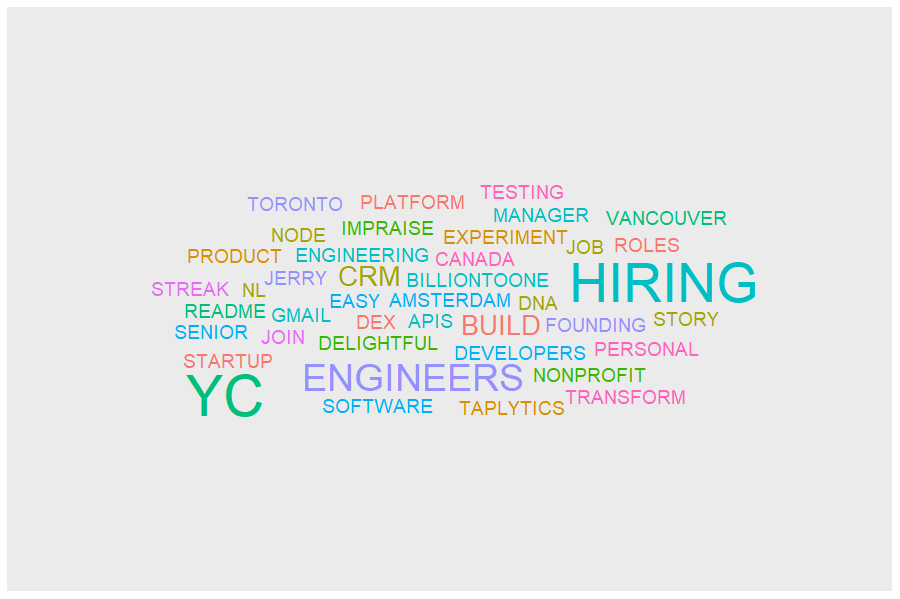
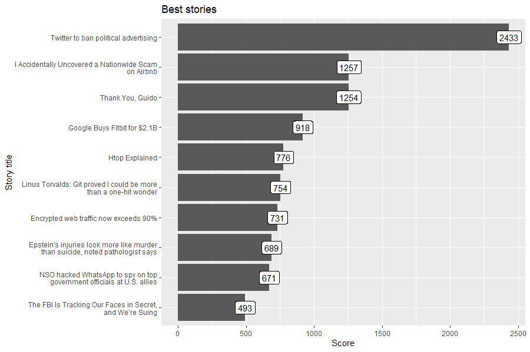
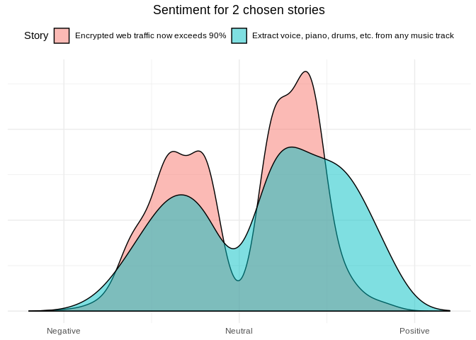

The hackeRnews package is an R wrapper for the Hacker News API. Project for Advanced R classes at the Warsaw University of Technology.
Installation and basic setup
The hackeRnews package is available on CRAN and can be installed with:
install.packages("hackeRnews")You can install the development version from GitHub with:
# install.packages("devtools")
devtools::install_github("szymanskir/hackeRnews")The Hacker News API is constructed in such a way that a single item is retrieved with a single request. This means that the retrieval of 200 items requires 200 separate API calls. Processing this amount of requests sequentially takes a significant amount of time. In order to solve this issue the hackeRnews package makes use of the built-in support for parallel requests in httr2 (httr2::req_perform_parallel).
Examples
Identify buzzwords in job offers posted on Hacker News
library(dplyr)
library(ggplot2)
library(ggwordcloud)
library(stringr)
library(tidytext)
job_stories <- get_latest_job_stories()
# get titles, normalize used words, remove non alphabet characters
title_words <- unlist(
lapply(job_stories, function(job_story) job_story$title) %>%
str_replace_all('[^A-Z|a-z]', ' ') %>%
str_replace_all('\\s\\s*', ' ') %>%
str_to_upper() %>%
str_split(' ')
)
# remove stop words
data('stop_words')
df <- data.frame(word = title_words, stringsAsFactors = FALSE) %>%
filter(str_length(word) > 0 & !str_to_lower(word) %in% stop_words$word) %>%
count(word)
# add colors to beautify visualization
df <- df %>%
mutate(color=factor(sample(10, nrow(df), replace=TRUE)))
word_cloud <- ggplot(df, aes(label = word, size = n, color = color)) +
geom_text_wordcloud() +
scale_size_area(max_size = 15)
word_cloud
Check what’s trending on Hacker News
library(stringr)
library(ggplot2)
best_stories <- get_best_stories(max_items=10)
df <- data.frame(
title = sapply(best_stories, function(best_story) str_wrap(best_story$title, 42)),
score = sapply(best_stories, function(best_story) best_story$score),
stringsAsFactors = FALSE
)
df$title <- factor(df$title, levels=df$title[order(df$score)])
best_stories_plot <- ggplot(df, aes(x = title, y = score, label=score)) +
geom_col() +
geom_label() +
coord_flip() +
ggtitle('Best stories') +
xlab('Story title') +
ylab('Score')
best_stories_plot
Sentiment analysis on two best stories from Hacker News
library(dplyr)
library(ggplot2)
library(stringr)
library(textdata)
library(tidytext)
data('stop_words')
best_stories <- get_best_stories(max_items = 2)
words_by_story <- lapply(best_stories, function(story) {
words <- get_comments(story) %>%
pull(text) %>%
str_replace_all('[^A-Z|a-z]', ' ') %>%
str_to_lower() %>%
str_replace_all('\\s\\s*', ' ') %>%
str_split(' ', simplify = TRUE)
filtered_words <- words[words != ""] %>%
setdiff(stop_words$word)
data.frame(
story_title = rep(story$title, length(filtered_words)),
word = filtered_words,
stringsAsFactors = FALSE
)
}) %>% bind_rows()
sentiment <- get_sentiments("afinn")
sentiment_plot <- words_by_story %>%
inner_join(sentiment, by = "word") %>%
ggplot(aes(x = value, fill = story_title)) +
geom_density(alpha = 0.5) +
scale_x_continuous(breaks=c(-5, 0, 5),
labels=c("Negative", "Neutral", "Positive"),
limits=c(-6, 6)) +
theme_minimal() +
theme(axis.title.x=element_blank(),
axis.title.y=element_blank(),
axis.text.y=element_blank(),
axis.ticks.y=element_blank(),
plot.title=element_text(hjust=0.5),
legend.position = 'top') +
labs(fill='Story') +
ggtitle('Sentiment for 2 chosen stories')
sentiment_plot